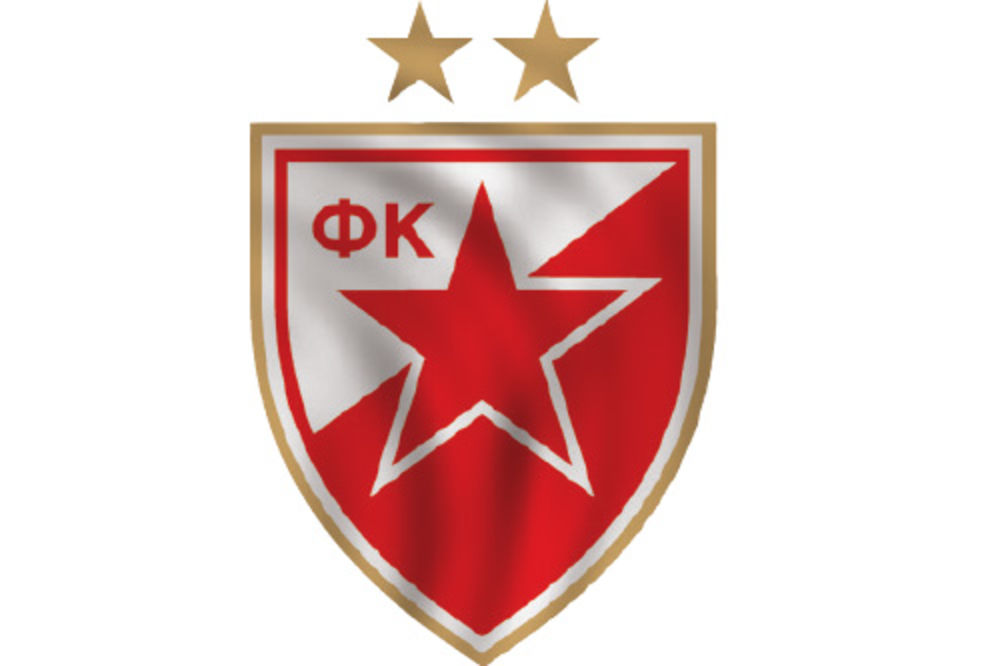
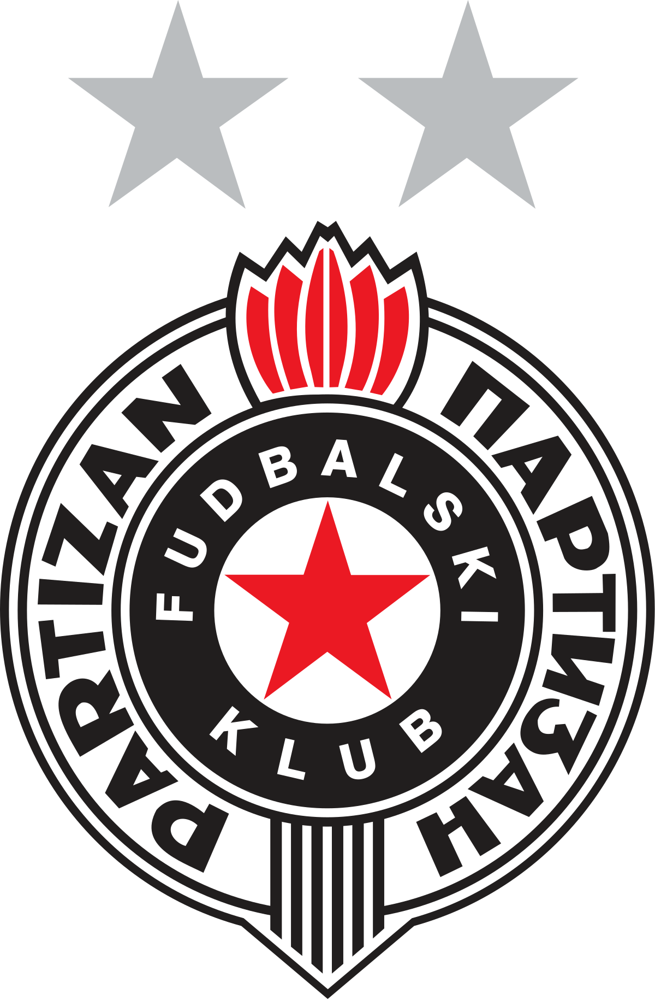
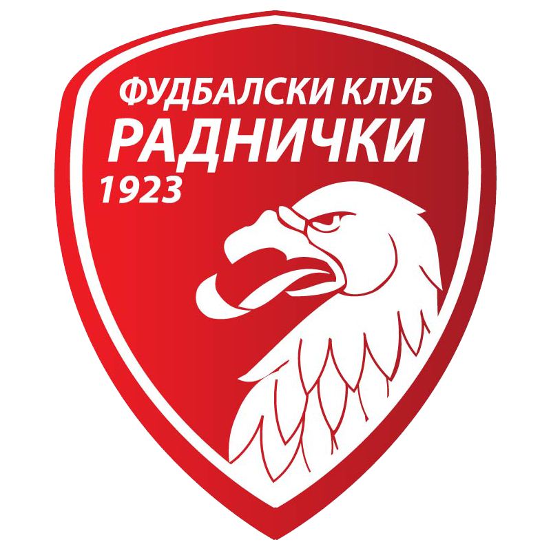
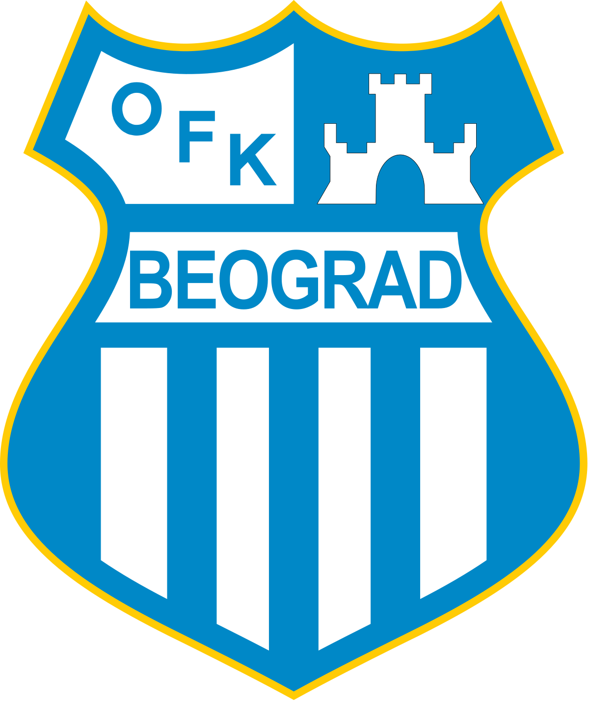
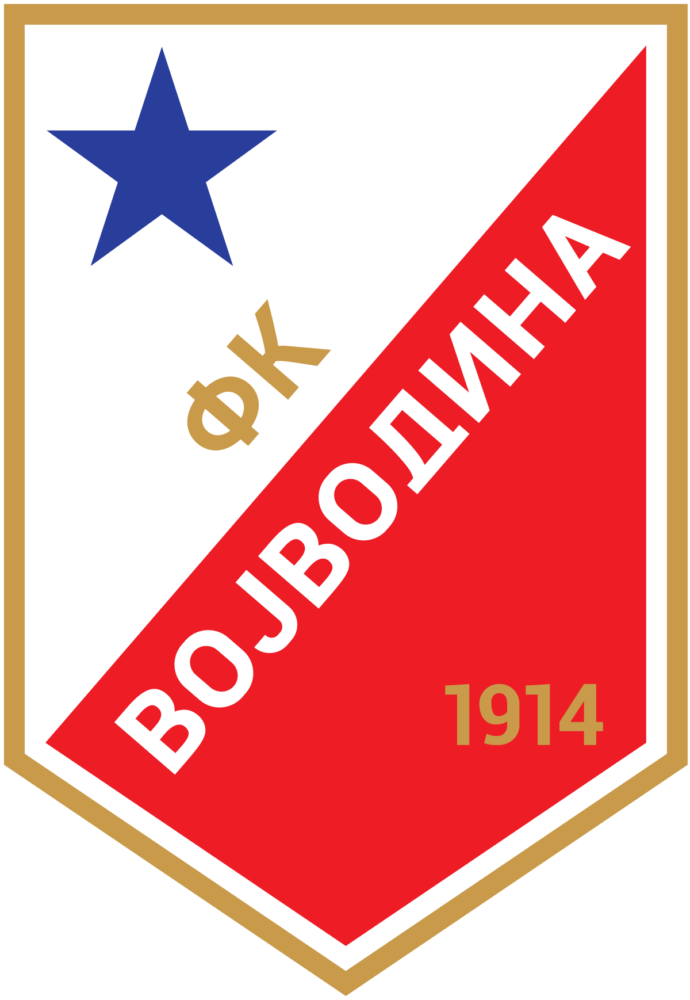
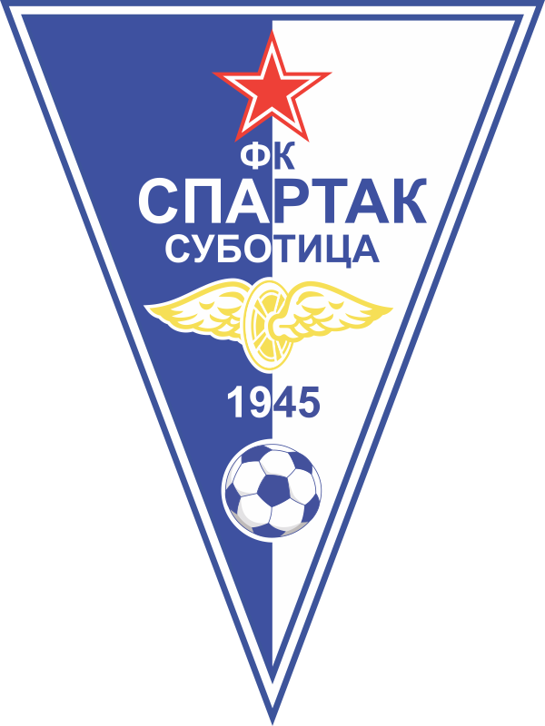

Serbian sport clubs
Sport Clubs in Serbia
Sport in Serbia plays an important role, and the country has a strong sporting history. The most popular sports in Serbia are football, basketball, tennis, volleyball, water polo and handball.
Professional sports in Serbia are organized by sporting federations and leagues (in case of team sports). One of particularities of Serbian professional sports is existence of many multi-sport clubs (called "sports societies"), biggest and most successful of which are Red Star (three world titles and seven European in various sports), Partizan (fourteen European titles in various sports), Radnički (three European titles in various sports) and Beograd in Belgrade, Vojvodina in Novi Sad, Radnički in Kragujevac, Spartak in Subotica.
List of most prominent Serbian clubs:
- Crvena Zvezda
- Partizan
- Radnicki
- Beograd
- Vojvodina
- Spartak
| Clubs | Year of Establishment | City | Club Crest | Titles | ||||
|---|---|---|---|---|---|---|---|---|
| Football | Basketball | Volleyball | Water polo | Tennis | ||||
| Crvena Zvezda | 1945 | Beograd |  | 4 | 5 | 6 | 7 | 8 |
| Partizan | 1945 | Beograd |  | 4 | 5 | 6 | 7 | 8 |
| Radnicki | 1923 | Kragujevac |  | 4 | 5 | 6 | 7 | 8 |
| Beograd | 1911 | Beograd |  | 4 | 5 | 6 | 7 | 8 |
| Vojvodina | 1914 | Novi Sad |  | 4 | 5 | 6 | 7 | 8 |
| Spartak | 1971 | Subotica |  | 4 | 5 | 6 | 7 | 8 |